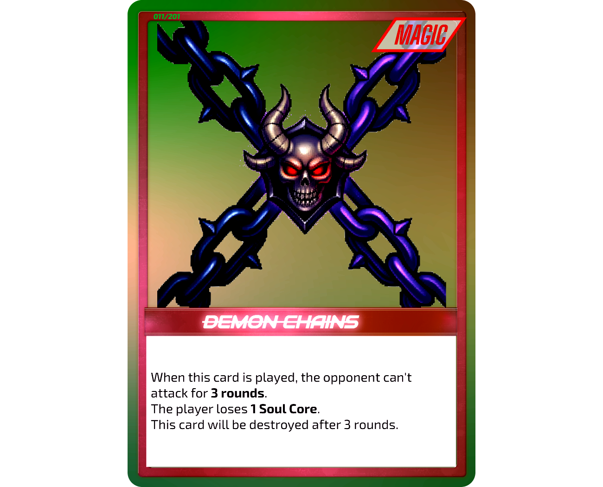
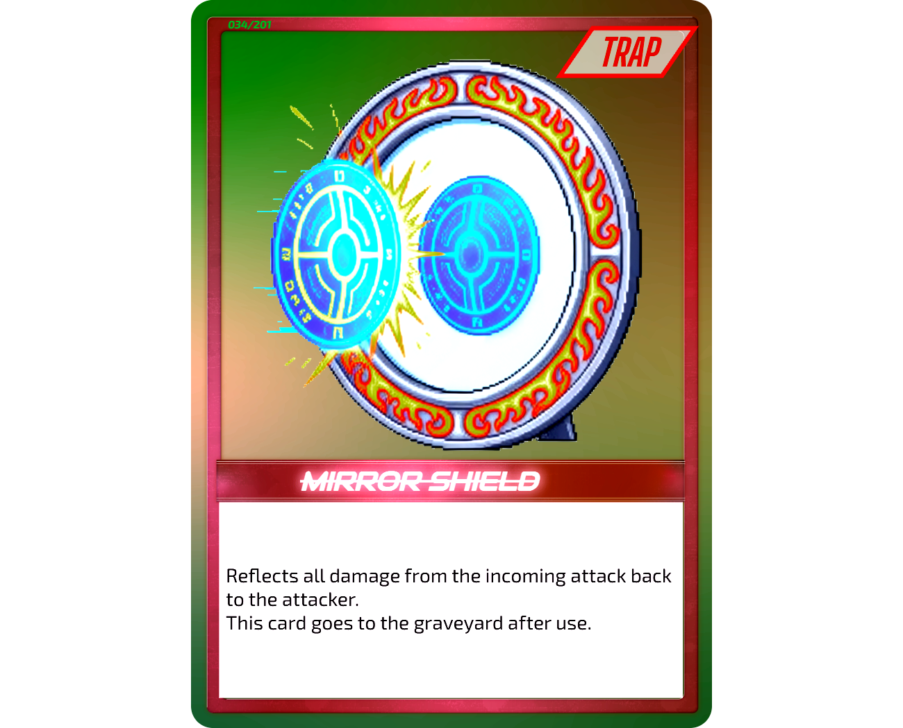
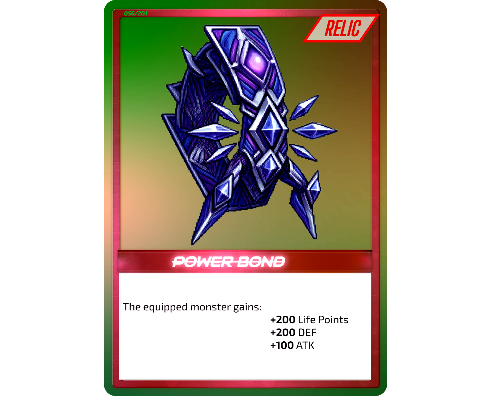

How To Play
Learn the basics of Angels & Demons TCG and prepare for battle.
Table of Contents
01. INTRODUCTION 02. BEFORE YOU START 03. UNDERSTANDING YOUR CARDS 04. SETTING UP THE DUEL 05. YOUR TURN 06. SUMMONING MONSTERS 07. BATTLE 08. MAGIC, TRAP, RELIC & ARENA CARDS 09. RESPONSES & TIMING 10. ADVANCED MECHANICS 11. HOW TO WIN 12. EXAMPLE DUEL 13. QUICK START01 — Introduction
Welcome to Angels & Demons TCG
Welcome to Angels & Demons TCG, a strategic trading card game where Angels and Demons battle for power.
In each duel, you will summon powerful Monsters, use Magic, Trap, Relic and Arena Cards, and make strategic decisions to defeat your opponent.
Your goal is simple: reduce your opponent's Soul Cores to 0 and claim victory.
But victory requires more than powerful cards. You must decide when to summon your Monsters, when to attack, when to defend, and when to use your card effects.
How This Guide Works
This guide is designed for players who are new to Angels & Demons TCG.
You do not need to memorize every rule before playing your first duel. The guide introduces the game step by step, starting with the basic setup and gradually explaining turns, summoning, battles, and card effects.
For complete rules, advanced interactions, exceptions, and official rulings, refer to the Angels & Demons TCG Official Rules.
02 — Before You Start
Before beginning a duel, each player needs the following:
Main Deck
Each player uses a 50-card Main Deck.
Your Main Deck can contain Monster, Magic, Trap and Relic Cards according to the official deck-building rules.
Soul Cores
Each player begins the duel with 10 Soul Cores.
Soul Cores represent your remaining power in the duel. Certain battles and card effects can cause you to lose Soul Cores.
Protect your Soul Cores at all times.
Playing Field
Each player needs enough space to place their cards during the duel.
Your field contains spaces for your Monsters and your Magic, Trap and Relic Cards.
You can control up to:
- 5 Monsters
- 5 Magic, Trap and Relic Cards
- 1 Arena Card
Your Opponent
Angels & Demons TCG is played between two players.
Each player brings their own deck and Soul Cores.
03 — Understanding Your Cards
Before playing your first duel, it is important to understand the different types of cards.
Monster Cards
Monster Cards are the main fighters of your deck.
They can be summoned to the field and used to attack your opponent's Monsters.
Monsters have battle statistics and abilities that determine how they perform during a duel.
Some Monsters are Angels, while others are Demons.
Choose your Monsters carefully and use them to build your strategy.

Magic Cards
Magic Cards provide powerful effects that can help you during the duel.
They can be played from your hand during your Main Phase unless the card states otherwise.
Magic Cards can change the situation on the field, support your Monsters, or give you other strategic advantages.

Trap Cards
Trap Cards are cards that you prepare on the field for later use.
Traps can be activated when their activation conditions are met.
Because your opponent may not know what Trap you have prepared, they can be an important part of your strategy.

Relic Cards
Relic Cards provide special effects and advantages during a duel.
They can support your strategy and work together with your Monsters and other cards.

Arena Cards
Arena Cards represent special areas of the battlefield and can influence the duel while they are active.
When an Arena Card is involved in a duel, always follow the instructions written on the card.
God Cards
God Cards are among the most powerful cards in Angels & Demons TCG.
They have unique abilities and special requirements that make them different from ordinary Monsters.
Because of their power, summoning a God can be a major turning point in a duel.
Malakor
Malakor is a special God Card with unique rules and forms.
When playing with Malakor, follow the instructions printed on the card and the official Rules.
04 — Setting Up the Duel
Once both players are ready, follow these steps to begin the duel.
Step 1 — Shuffle the Decks
Both players shuffle their own Main Deck.
The decks are then exchanged so that each player shuffles their opponent's deck.
Return the decks to their owners after shuffling.
Step 2 — Draw 5 Cards
Each player draws 5 cards from the top of their deck.
These 5 cards form your opening hand.
Keep your hand hidden from your opponent.
Step 3 — Place Your Soul Cores
Each player starts with 10 Soul Cores.
Place your Soul Cores where both players can clearly see them.
Step 4 — Determine the First Player
Determine which player goes first.
You can use any mutually agreed method to decide.
Step 5 — Begin the Duel
The first player begins their first turn.
The first player cannot attack during their first turn.
After the first player's turn ends, the second player begins their turn.
05 — Your Turn
Each turn is divided into four phases:
DRAW PHASE
↓
MAIN PHASE
↓
BATTLE PHASE
↓
END PHASE
Each phase has a specific purpose.
Draw Phase
At the beginning of your turn, draw 1 card from the top of your deck.
Your hand is now ready for the rest of your turn.
Main Phase
During your Main Phase, you prepare your field and play your cards.
You can:
- Summon Monsters
- Play Magic Cards
- Play Relic Cards
- Set Trap Cards
- Activate available card effects
Normally, you can summon 1 Monster Card per turn.
Some cards or effects may allow you to perform additional summons.
Battle Phase
During your Battle Phase, your Monsters can attack.
Each Monster can normally attack once per Battle Phase.
You choose which Monster you want to attack with and select an appropriate target.
Remember that Monsters in Defense Position cannot attack.
End Phase
When you have finished your actions, end your turn.
Any effects that apply during the End Phase are resolved according to their card instructions.
Your opponent then begins their turn.
06 — Summoning Monsters
Monsters are the main forces you use to battle your opponent.
There are several ways to bring Monsters onto the field.
Normal Summon
A Normal Summon is the standard way to summon a Monster.
Normally, each player may perform 1 Monster summon per turn.
If your Monster Field has an available space, you can summon a Monster according to the requirements of the card.
Offer Summon
Some powerful Monsters require you to offer other Monsters as a cost to summon them.
Follow the requirements written on the card.
Offering Monsters does not count as an additional normal Monster summon beyond the summon being performed.
Special Summon
Some card effects allow you to Special Summon a Monster.
Special Summons follow the instructions of the card that allows the summon.
A Special Summon may have different requirements from a Normal Summon.
Always follow the specific instructions written on the card.
God Cards
God Cards have special summoning requirements.
Their power comes with a cost, so make sure you have everything required before attempting to summon one.
Always follow the specific summoning instructions on the God Card.
07 — Battle
The Battle Phase is where your Monsters fight.
Attack Position
A Monster in Attack Position can declare attacks.
Attack Position is generally used when you want to attack your opponent's Monsters or attack your opponent directly when permitted.
Defense Position
A Monster in Defense Position cannot declare an attack.
Instead, it uses its Defense value when it is attacked.
Defense Position can therefore be useful when protecting your field.
Choosing a Target
When you declare an attack, choose the Monster you want to attack.
The attacking player chooses the target unless a card effect states otherwise.
Attack vs. LP
When an Attack Position Monster is attacked, the attacking Monster's Attack is compared with the defending Monster's LP.
The result of the battle determines what happens to the Monsters involved.
Attack vs. DEF
When a Defense Position Monster is attacked, the attacking Monster's Attack is compared with the defending Monster's Defense.
The defending Monster does not use its LP for this comparison.
Defeated Monsters
When a Monster's LP or Defense reaches 0, that Monster is defeated.
A defeated Monster is normally sent to the Graveyard, unless a card effect states otherwise.
Soul Core Loss
Soul Cores can be lost during a duel.
One important way to lose a Soul Core is when a Monster is defeated in Attack Position.
Certain card effects can also cause Soul Core loss.
In addition, if you have no Monsters on your field and your opponent attacks, you can lose 1 Soul Core per attack.
Protect your Monsters and your Soul Cores carefully.
08 — Magic, Trap, Relic & Arena Cards
Your Monsters are not your only weapons.
Magic, Trap and Relic Cards can change the course of a duel.
Magic Cards
Magic Cards are normally played from your hand during your Main Phase.
Read the card carefully and follow its instructions.
Some Magic Cards can immediately change the battlefield or provide support for your strategy.
Trap Cards
Trap Cards are normally set on your field before they can be used.
Once their activation conditions are met, they can be activated according to their instructions.
Traps allow you to prepare responses to your opponent's actions.
Relic Cards
Relic Cards provide special effects that can support your strategy.
Use them at the appropriate time to gain an advantage.
Arena Cards
Arena Cards can affect the battlefield and may change how certain parts of the duel work.
Follow the instructions written on the specific Arena Card.
When Cards Can Be Activated
Not every card can be activated at every moment.
Always check the card's instructions and activation requirements.
If a card says that it can only be activated during a specific phase or in response to a specific action, those requirements must be met.
09 — Responses & Timing
Some actions during a duel can give the other player an opportunity to respond.
This creates an important part of the game's strategy.
Responding to Actions
When an action or effect allows a response, players can use appropriate cards or effects according to their activation conditions.
Resolve the responses according to the official timing rules.
Attack Responses
When an attack is declared, an appropriate response window may occur before the battle is fully resolved.
Players should resolve applicable responses before continuing with the battle.
Effects
Card effects can change the normal course of the game.
Whenever an effect is activated, follow the instructions written on the card.
If two or more effects interact, use the official timing and resolution rules.
Tick Effects
Some effects continue to apply over time rather than resolving only once.
These are known as Tick Effects.
Follow the instructions and duration written on the card.
For complicated effect interactions, refer to the Rulebook.
10 — Advanced Mechanics
Once you understand the basic game, you can begin learning the more advanced mechanics.
These mechanics are not necessary to play your first few games, but they become important as you become more experienced.
Sacrificing
Some cards require you to sacrifice Monsters as part of their requirements.
A sacrificed Monster is removed from the field and normally goes to the Graveyard unless the card states otherwise.
Mind Control
Some card effects can allow you to take control of an opponent's Monster.
Follow the duration and conditions written on the effect.
Returning Monsters to Hand
Certain effects can return Monsters from the field to a player's hand.
A returned Monster is no longer on the field and can potentially be summoned again later.
Graveyard
Defeated Monsters and other cards that are discarded or destroyed normally go to the Graveyard.
Cards in the Graveyard are no longer on the field, but some card effects may interact with them.
Banished Cards
Some effects can remove cards from the normal play area and banish them.
A banished card is treated differently from a card in the Graveyard.
Face-Down Cards
Some cards can be placed face-down.
Face-down cards hide their information from the opponent until they are revealed or activated according to the applicable rules.
For detailed interactions involving these mechanics, refer to the Rulebook.
11 — How to Win
There are several official ways a player can lose a duel.
Soul Cores Reach 0
The most important victory condition is reducing your opponent's Soul Cores to 0.
If your opponent reaches 0 Soul Cores, you win the duel.
Deck-Out
A player can also lose when they are required to draw from their deck but have no cards remaining, according to the official rules.
Other Official Loss Conditions
Certain card effects or other official game conditions can also cause a player to lose.
For the complete list of official victory and loss conditions, refer to the Angels & Demons TCG Official Rules.
12 — Example Duel
Now let's put the basics together in a simple example.
Opening Hand
Both players shuffle their decks and draw 5 cards.
Each player has 10 Soul Cores.
Player 1 is chosen to go first.
Player 1's Turn
Player 1 begins their Draw Phase and draws 1 card.
During the Main Phase, Player 1 summons a Monster.
They prepare their other cards and finish their Main Phase.
Because Player 1 is the first player, they cannot attack during their first turn.
Player 1 ends their turn.
Player 2's Turn
Player 2 begins their turn and draws 1 card.
During their Main Phase, Player 2 summons a Monster.
They then enter the Battle Phase.
First Battle
Player 2 chooses one of their Monsters and declares an attack against Player 1's Monster.
The target is selected and the battle is resolved.
The appropriate Attack, HP, or Defense values are compared depending on the battle.
Card Effects
Before or during the battle, a player may be able to activate an appropriate card or effect.
If a response is available, it is resolved according to the card's instructions and the official timing rules.
Soul Core Loss
If a Monster is defeated in Attack Position, the appropriate Soul Core loss is applied.
Other card effects may also cause Soul Core loss.
Continuing the Duel
After the Battle Phase, the player enters the End Phase.
The turn ends and the other player begins their next turn.
The duel continues until one player meets an official loss condition.
13 — Quick Start
Start Playing in 5 Steps
1. Prepare Your Deck
Bring your 50-card Main Deck and shuffle it.
2. Prepare the Duel
Each player starts with 10 Soul Cores.
3. Draw Your Hand
Each player draws 5 cards.
4. Take Your Turn
Follow the four phases:
Draw → Main → Battle → End
Summon Monsters, play your cards, and attack your opponent when possible.
5. Defeat Your Opponent
Reduce your opponent's Soul Cores to 0 or cause them to meet another official loss condition.
You're Ready to Play!
That's everything you need to understand the basics of your first Angels & Demons TCG duel.
Build your deck. Summon your Monsters. Choose your strategy.
Enter the battle and prove your power.
For complete rules, advanced mechanics, and official rulings, see the Angels & Demons TCG Official Rules.